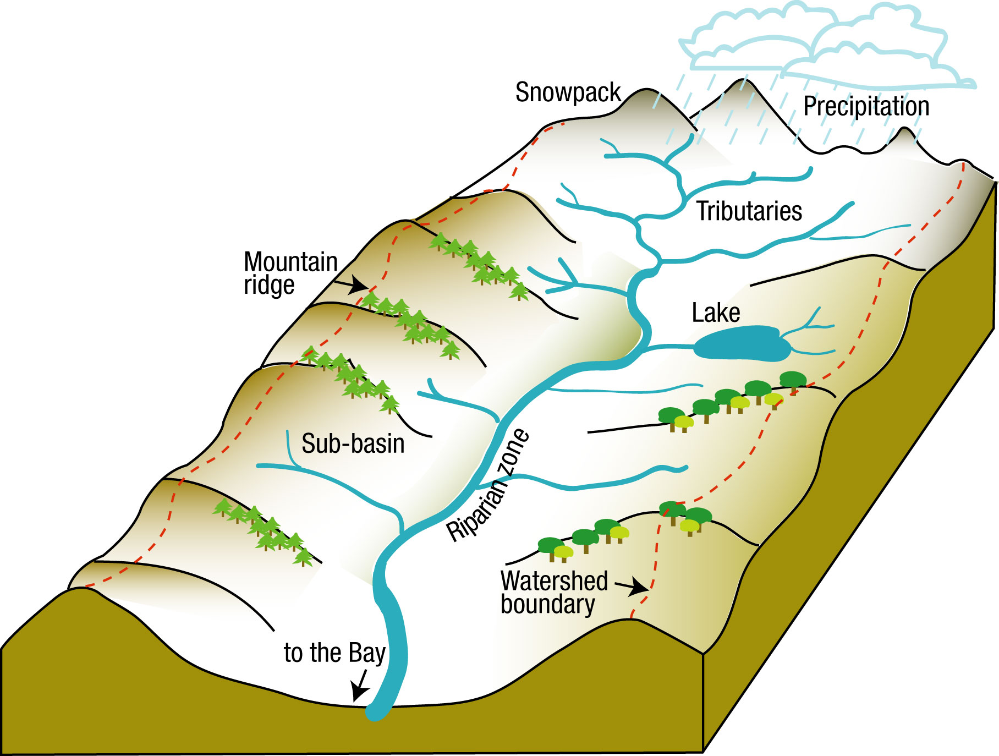
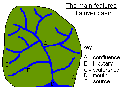
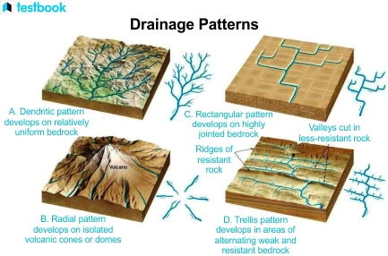
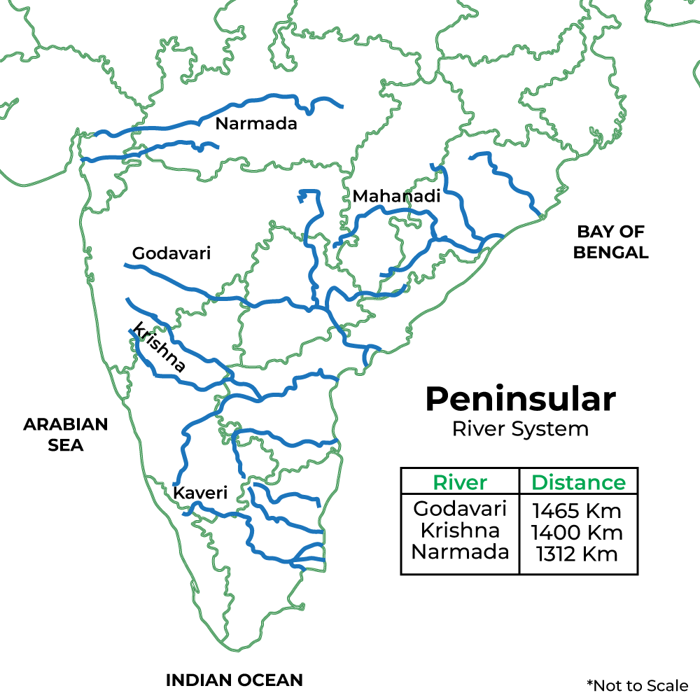
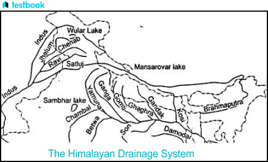

Drainage System — Introduction
Drainage System: Introduction
Rivers constitute the most useful natural resource, and India is blessed with hundreds of large and small rivers that drain the length and breadth of the country. These rivers are a great source of water for irrigation, industry, and domestic purposes and have attracted the attention of planners, economists, geographers, geologists, hydrologists, and the like.
Before learning about the drainage system of India, it is important to know a few commonly used terms:
The flow of water through well-defined channels is known as ‘ drainage ’; such channels' network is called a ‘ drainage system.’ The drainage pattern of an area is the outcome of the geological period, nature and structure of rocks, topography, slope, amount of water flowing, and the periodicity of the flow. A river drains the water collected from a specific area, which is called its ‘ catchment area.’ An area drained by a river and its tributaries is called a drainage basin. The boundary line separating one drainage basin from the other is known as the watershed. The catchments of large rivers are called river basins, while those of small rivulets and rills are often referred to as watersheds.

There is, however, a slight difference between a river basin and a watershed:
Watersheds are small in area, while the basins cover larger areas. River basins and watersheds are marked by unity. What happens in one part of the basin or watershed directly affects the other parts and the unit as a whole. That is why they are accepted as the most appropriate micro, meso, or macro planning regions.
River Basin and Watershed
River Basin: A river basin is the entire geographical area drained by a river and its tributaries. It includes all the land where surface water from rain, melting snow, or ice converges to a single point, usually the river's mouth, where it discharges into another water body such as an ocean, sea, or lake.
Watershed: A watershed is a smaller geographical area that drains all its water to a common outlet, such as a stream, lake, or river. It is essentially a smaller unit within a river basin and is often delineated by ridges or high points separating two drainage areas.

Major River Basins of India
| River Basin | Major River | Length (km) | States Covered | Key Tributaries | Drains Into | Flow Direction |
|---|---|---|---|---|---|---|
| Ganga Basin | Ganga | 2,525 | Uttarakhand , Uttar Pradesh, Bihar, Jharkhand, West Bengal | Yamuna, Ghaghara, Gandak, Kosi, Son, Damodar | Bay of Bengal | West to East |
| Brahmapu tra Basin | Brahmaputra | 2,900 (overall) | Arunachal Pradesh, Assam, Nagaland, Meghalaya | Dibang, Lohit, Subansiri, Manas, Dhansiri | Bay of Bengal | West to East |
| Godavari Basin | Godavari | 1,465 | Maharashtra , Telangana, Andhra Pradesh, Chhattisgar h, Odisha | Indravati, Pranahita, Manjira, Sabari, Penganga | Bay of Bengal | West to East |
|---|---|---|---|---|---|---|
| Krishna Basin | Krishna | 1,400 | Maharashtra , Karnataka, Telangana, Andhra Pradesh | Tungabhadra, Bhima, Malaprabha, Koyna, Musi | Bay of Bengal | West to East |
| Cauvery Basin | Cauvery | 800 | Karnataka, Tamil Nadu, Kerala, Puducherry | Kabini, Bhavani, Noyyal, Amaravati, Hemavathi | Bay of Bengal | West to East |
| Narmada Basin | Narmada | 1,312 | Madhya Pradesh, Maharashtra , Gujarat | Tawa, Hiran, Banjar, Shakkar, Dudhi, Tendoni | Arabian Sea | East to West |
| Tapi Basin | Tapi | 724 | Madhya Pradesh, Maharashtra , Gujarat | Purna, Girna, Panjhra, Bori, Waghur, Aner | Arabian Sea | East to West |
| Mahanadi Basin | Mahanadi | 851 | Odisha, Chhattisgar h, Jharkhand, Maharashtra | Tel, Ib, Jonk, Hasdeo, Mand, Seonath | Bay of Bengal | West to East |
| Indus Basin | Indus | 3,180 (overall) | Jammu & Kashmir, Himachal Pradesh, Punjab, Haryana, Rajasthan | Jhelum, Chenab, Ravi, Sutlej, Beas | Arabian Sea | North to South (in India) |
| Penner Basin | Penner | 597 | Andhra Pradesh, Karnataka | Chitravathi, Papagni, Kunderu | Bay of Bengal | West to East |
| Sabarmati Basin | Sabarmati | 371 | Rajasthan, Gujarat | Wakal, Sei, Harnav, Hathmati, Khari | Arabian Sea | East to West |
|---|---|---|---|---|---|---|
| Mahi Basin | Mahi | 583 | Madhya Pradesh, Rajasthan, Gujarat | Som, Anas, Bhadar | Arabian Sea | East to West |
| Brahmani- Baitarani | Brahmani, Baitarani | 799 (combined) | Odisha, Jharkhand | Karo, Sankh, Salandi, Tikira, Kimiria | Bay of Bengal | West to East |
| Subarnare kha Basin | Subarnarekha | 395 | Jharkhand, Odisha, West Bengal | Kharkai, Kanchi, Karokari | Bay of Bengal | West to East |
| Periyar Basin | Periyar | 244 | Kerala | Muthirapuzha, Cheruthoni, Mullayar | Arabian Sea | East to West |
Drainage Patterns
The streams within a drainage basin form certain patterns, depending on the slope of the land, underlying rock structure, as well as the climatic conditions of the area. These are:
Dendritic Trellis Rectangular Radial patterns The dendritic pattern develops where the river channel follows the slope of the terrain. The stream with its tributaries resembles the branches of a tree, thus the name dendritic.
A river joined by its tributaries, at approximately right angles, develops a trellis pattern. A trellis drainage pattern develops where hard and soft rocks exist parallel to each other.
A rectangular drainage pattern develops on a strongly jointed rocky terrain. The radial pattern develops when streams flow in different directions from a central peak or dome-like structure.
A combination of several patterns may be found in the same drainage basin.

Classification of Drainage Systems of India
1 Based on the size of the catchment area:
| Division | Size of Catchment Area | Major Rivers/Basins |
|---|---|---|
| Major Rivers | > 20,000 sq. km. | Ganga, Brahmaputra, Krishna, Tapi, Narmada, Mahi, Pennar, Sabarmati, Barak, etc. |
| Medium Rivers | 20,000 – 2,000 sq. km. | Kalindi, Periyar, Meghna, etc. |
| Minor Rivers | ≤2,000 sq. km. | A good number of rivers, primarily fol w in regions of low rainfall. |
2 Based on their origin:
The Himalayan Rivers: These are perennial rivers and include the Indus, the Ganga, the Brahmaputra, and their tributaries.
The Peninsular Rivers: These are non-perennial rivers and include the Mahanadi, the Godavari, the Krishna, the Cauvery, the Narmada, and the Tapi and their tributaries. 3 Based on Orientation to the Sea:
The Bay of Bengal drainage: Rivers that drain into the Bay of Bengal and are east-flowing rivers.
The Arabian Sea drainage: Rivers that drain into the Arabian Sea and are west-flowing rivers.
They are separated by the Delhi Ridge, the Aravallis, and the Sahyadris (water divide).
| The Bay of Bengal drainage | The Arabian Sea drainage |
|---|---|
| Rivers that drain into the Bay of Bengal | Rivers that drain into the Arabian Sea |
| East fol wing rivers | West fol wing rivers |
| 77 percent of the drainage area of the country is oriented towards the Bay of Bengal | 23 percent of the drainage area of the country is oriented toward the Arabian sea |
| The Ganga, the Brahmaputra, the Mahanadi, the Godavari, the Krishna, the Cauvery, the Penneru, the Pennar, the Vaigai, etc. are some examples. | The Indus, the Narmada, the Tapi, the Sabarmati, the Mahi, and a large number of swift-fol wing western coast rivers descending from the Sahyadris are some examples. |
The area covered by the Bay of Bengal drainage and Arabian Sea drainage are not proportional to the amount of water that drains through them.
Comparison between the Himalayan and the Peninsular Rivers
| Aspects | Himalayan Rivers | Peninsular Rivers |
|---|---|---|
| Diagram | ||
| Place of origin | Himalayan mountain covered with glaciers | Peninsular plateau and central highland |
| Nature of fol w | Perennial; receive water from glacier and rainfall | Seasonal; dependent on monsoon rainfall |
| Type of drainage | Antecedent and consequent leading to dendritic pattern in plains | Super-imposed, rejuvenated resulting in trellis, radial and rectangular patterns |
| Nature of river | Long course, fol wing through the rugged mountains experiencing headward erosion and river capturing; In plains meandering and shifting of course | Smaller, fxied course with well-adjusted valleys |
| Catchment area | Very large basins | Relatively smaller basin |
| Age of the river | Young and youthful, active and deepening in the valleys | Old rivers with graded proflie, and have almost reached their base levels |

